Jakob Holmqvist Larsen — Work
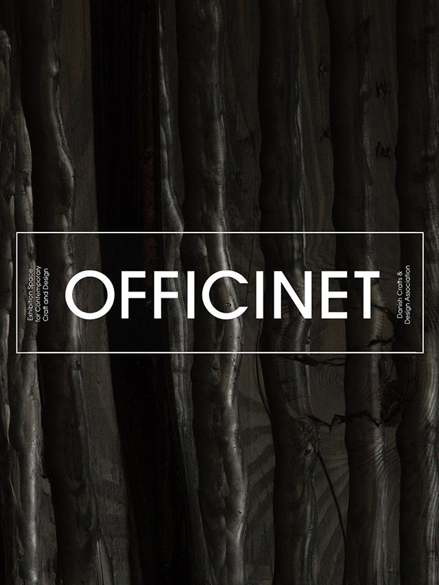
OFFICINET 20272026upcoming exhibition in officinet, Bredgade 66, DK-1260 Copenhagen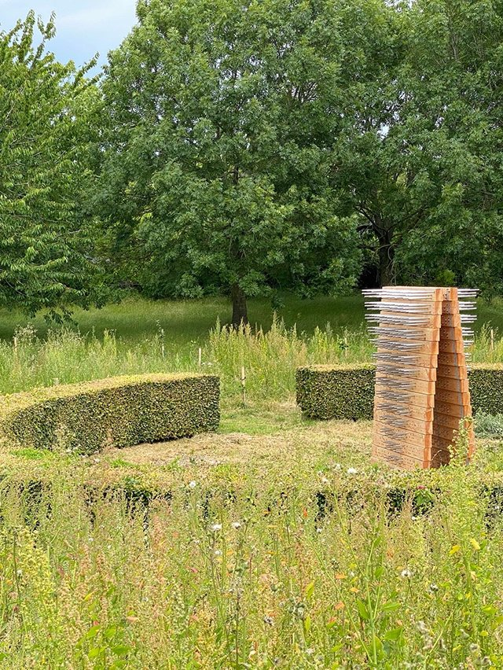
REVISITED2022permanent public sculpture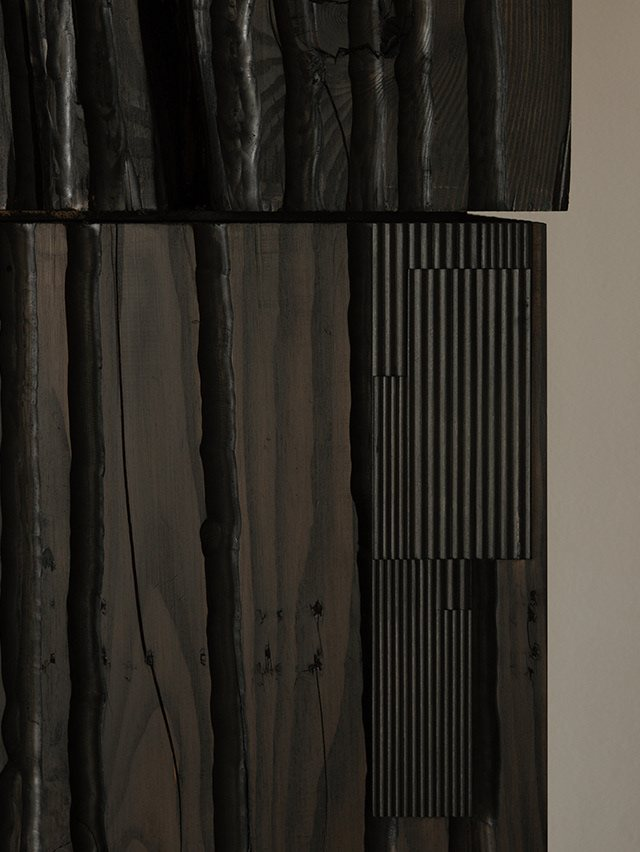
DINESEN SHOWROOM2025the monoliths are a part of the Dinesen Factory's Showroom exhibition in Jels (DK).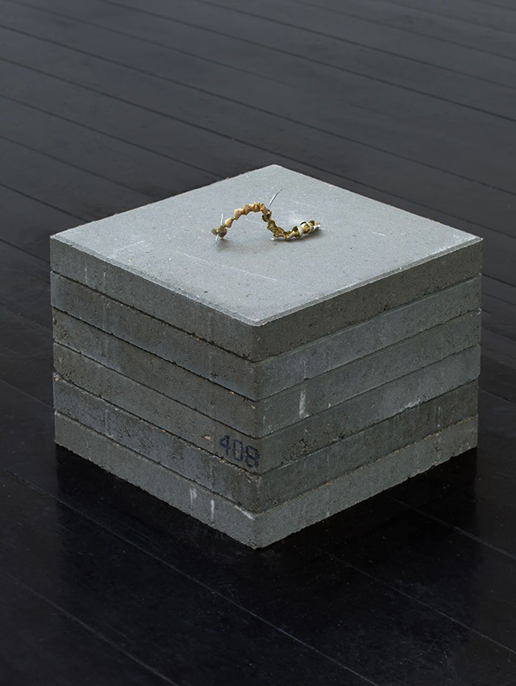
KUNSTNERNES EFTERÅRSUDSTILLING2024a part of the Artists' Fall exhibition 2024 in Den Frie Udstilling in Copenhagen October and November 2024.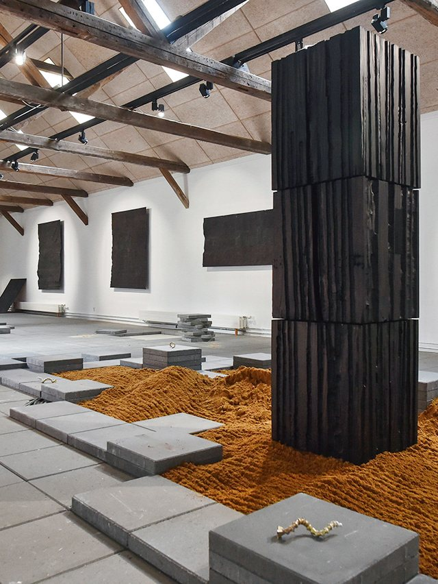
EXHIBITION ARTIFICIAL LANDSCAPES2024exhibition in Kunstpakhuset sept. 21st to oct. 27th 2024.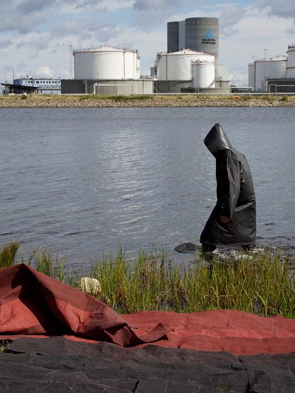
INDUSTRIAL IMPRINTS (ARTIFICIAL LANDSCAPES)2024performance at Prøvestenen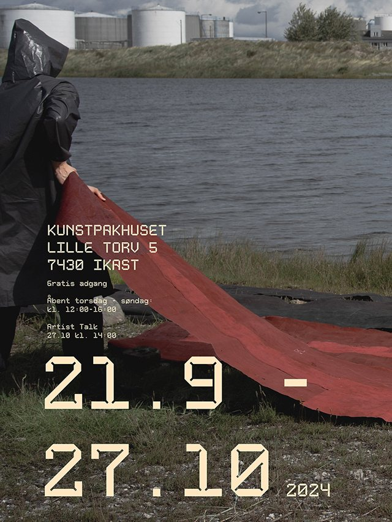
UPCOMING EXHIBITION ARTIFICIAL LANDSCAPES2024exhibition in Kunstpakhuset sept. 21st to oct. 27th 2024.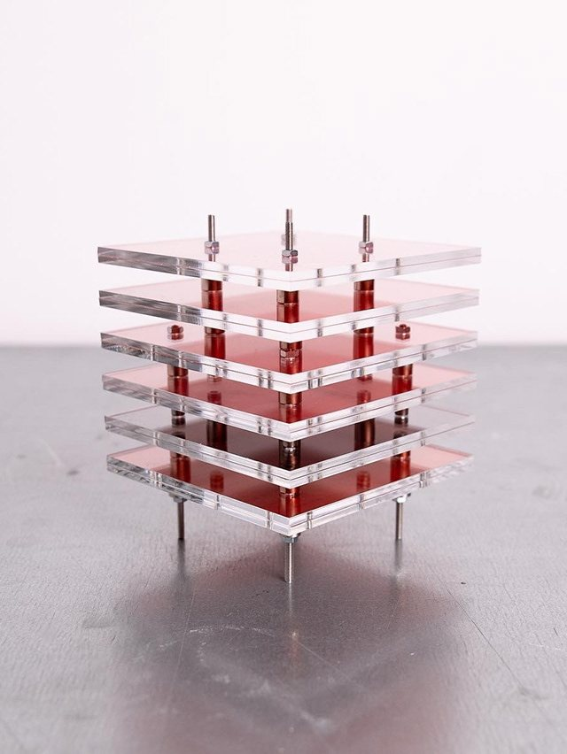
ANTHROPOCENE INCISIONS #32023techno-geological layered sculptures ANTHROPOCENE INCISIONS #22023techno-geological layered sculptures
ANTHROPOCENE INCISIONS #22023techno-geological layered sculptures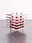
ANTHROPOCENE INCISIONS #12023techno-geological layered sculptures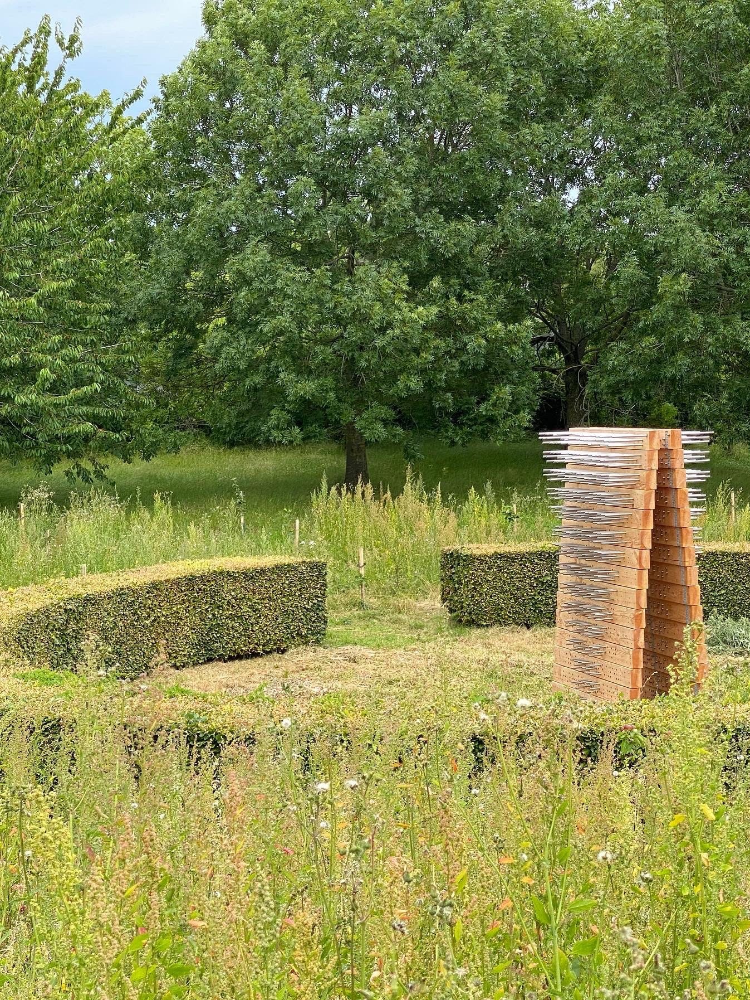
INSECT HOTEL2022permanent public sculpture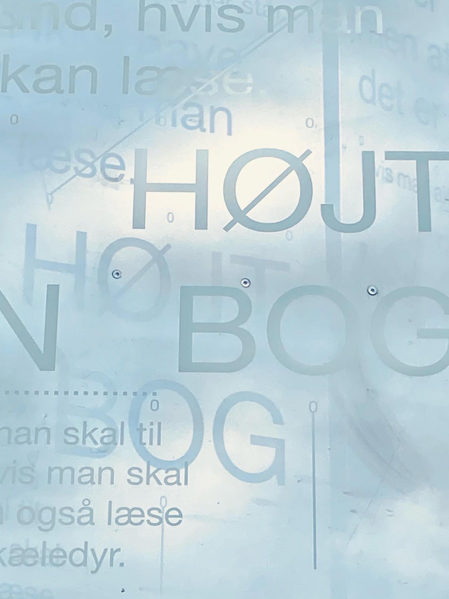
HEDENSTED LIBRARY2022permanent public sculpture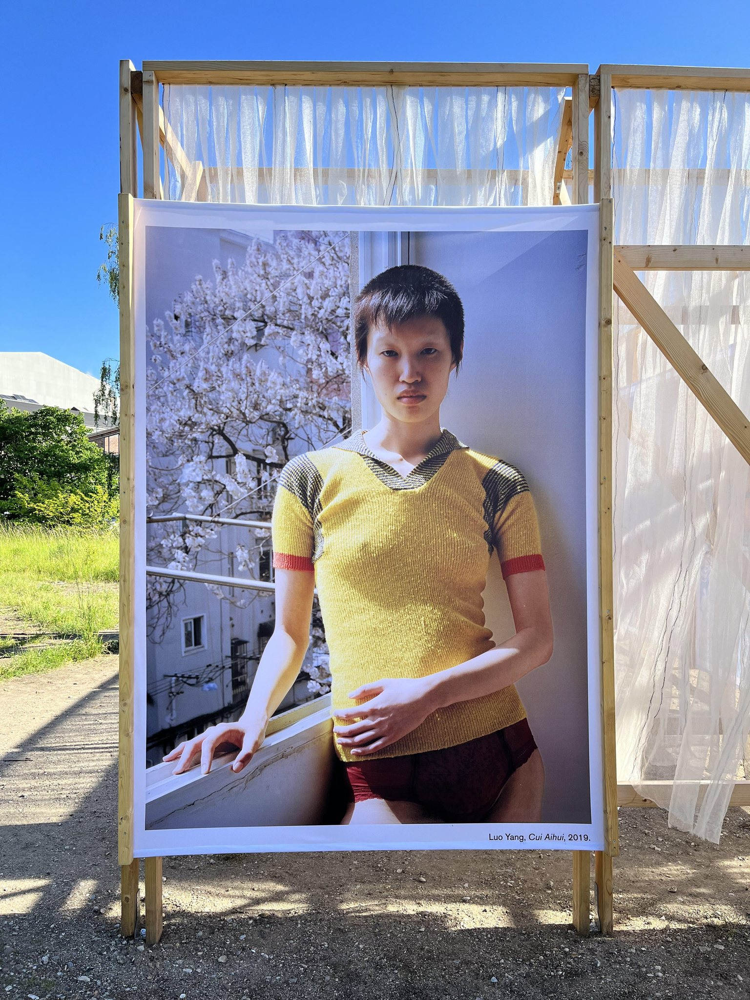
COPENHAGEN PHOTO FESTIVAL2022reoccuring installation 2021-2024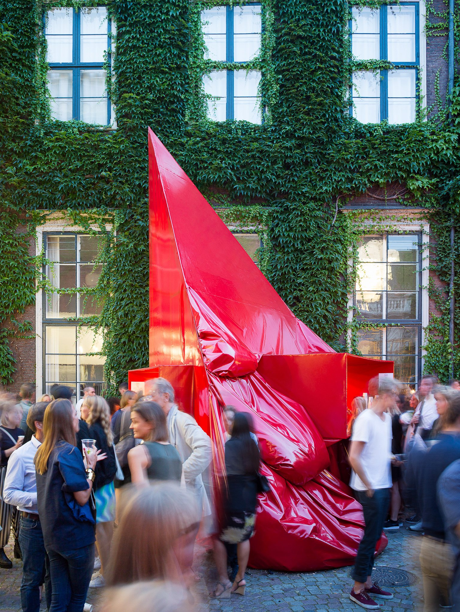
CHART ART 20152015installation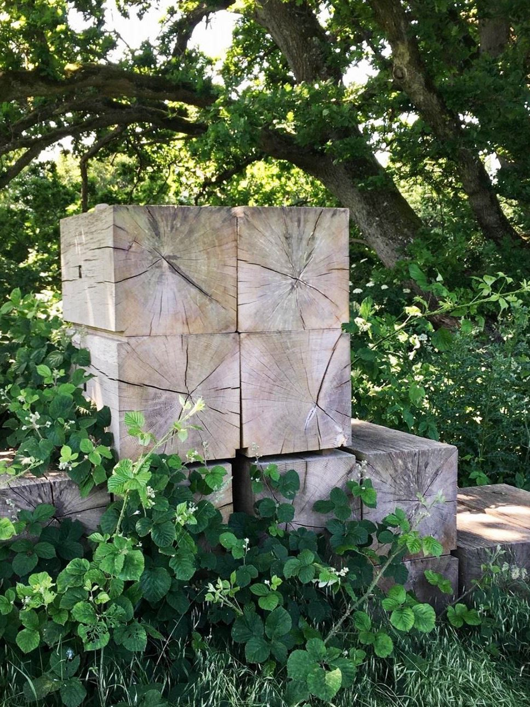
SVANNINGE HILLS2013look out posts for bikuben foundation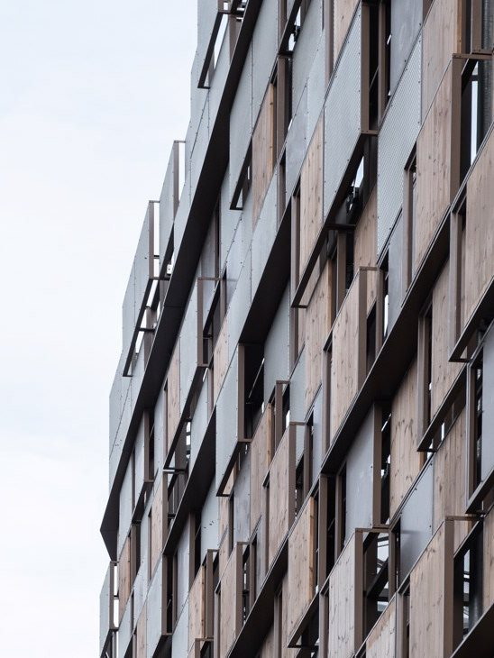
+ ARCHITECTURE2022architecture projects - as a part of: vilhelm lauritzen architects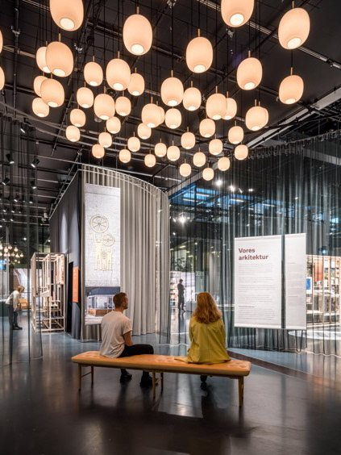
+ EXHIBITIONS2022exhibitions - as a part of: vilhelm lauritzen architects & henning larsen architects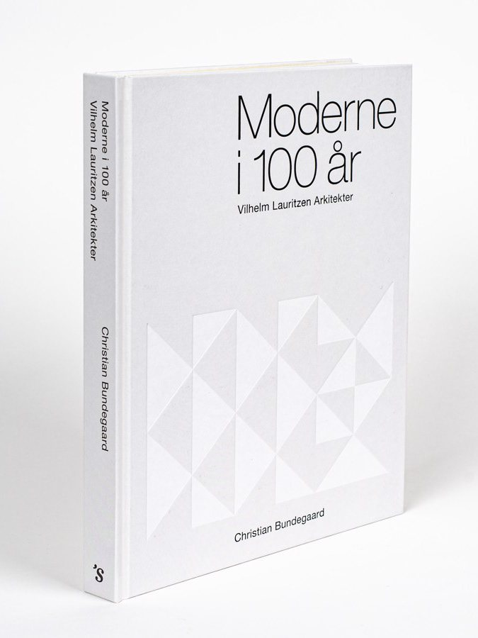
+ BOOKS2022books - as a part of: vilhelm lauritzen architects